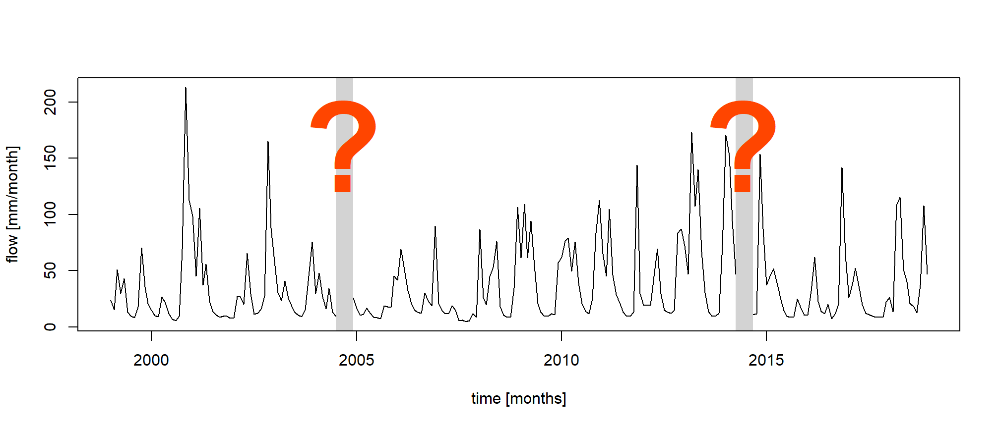
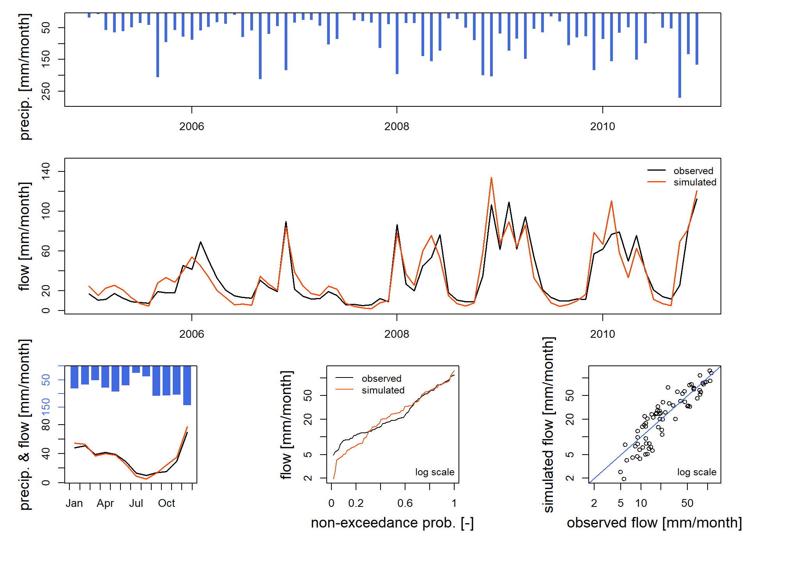
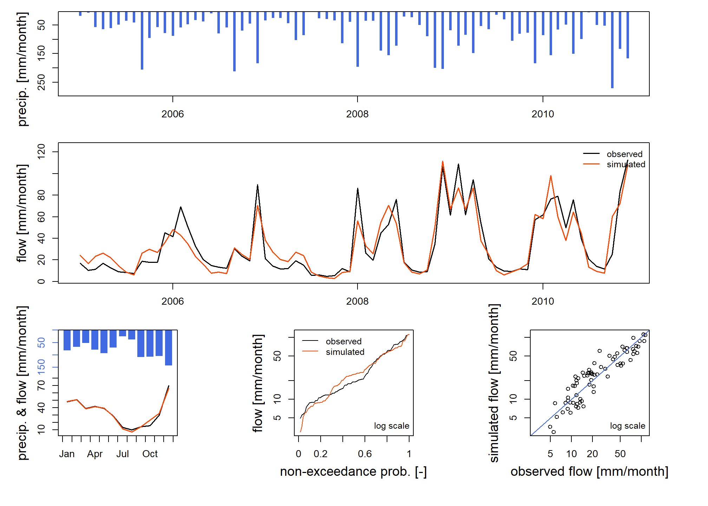
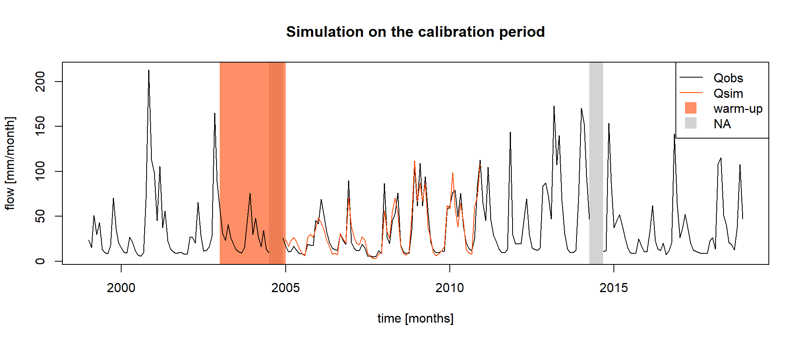
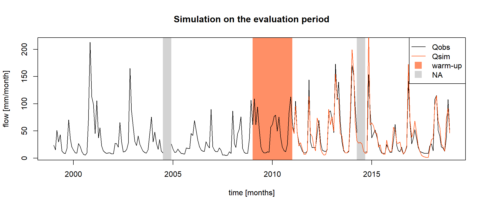
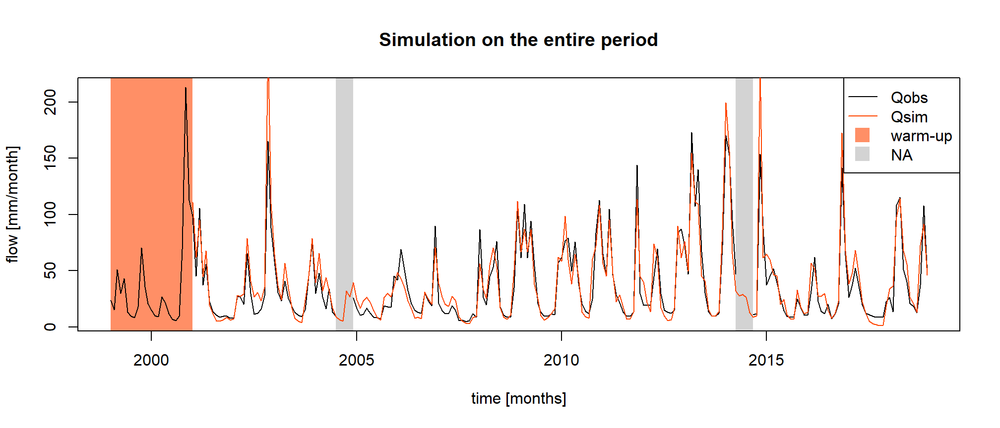

Streamflow reconstruction
Pierre Brigode & Olivier Delaigue
1 Objective
1.1 Context
The L’Esteron au Broc [La Clave] is a catchment of 442 km² for which measured streamflows are available from 1999 to 2018, but with missing data (e.g. for the year 2014).
The exercise consists in using the hydro-climatic data available on the catchment and a rainfall-runoff model to reconstitute the missing data through hydrological simulation (see following figure). To do this, we must first ensure, through a calibration-evaluation procedure, that the model has a sufficient level of performance to carry out this reconstruction exercise.
This work will be performed in four steps:
- Manual calibration of the rainfall-runoff model (over the so-called “calibration” period)
- Automatic calibration of the rainfall-runoff model (over the “calibration” period).
- Evaluation of the obtained parameter sets (over the “evaluation” period).
- Hydrological reconstruction by rainfall-runoff modelling (during the “simulation” period).

1.2 Instructions
This section aims to define the calibration and simulation conditions of the hydrological model (parameter calibration period, model initialization period, calibration criterion, etc.).
1.2.1 Rainfall-runoff model
You will used the GR2M model (Mouelhi et al. 2006). It is a conceptual and lumped rainfall-runoff model, operating on a monthly time step and having two parameters. It requires as input continuous time series of monthly precipitation and potential evapotranspiration.
This model is easily usable thanks to the airGRteaching package (Delaigue et al. 2025, 2023), developped for the R software by the Catchment Hydrology research group of the HYCAR research unit (INRAE, France).
The time series of observed precipitation, PE and streamflow can be
easily formatted using the PrepGR() function. A
rainfall-runoff simulation can be performed with the
SimGR() function, an a parameter calibration using the
CalGR().
1.2.2 Calibration (and warm-up) period
GR2M, like many conceptual rainfall-runoff models, consists of conceptual reservoirs, whose initial levels at the beginning of the simulation are unknown and cannot be estimated by measurement. These initial levels must therefore be chosen arbitrarily (or based on an a priori). This can induce large errors in the model in the case where the estimated initial conditions deviate from what they should be according to the previous climatic conditions. To limit these errors, a warm-up period is generally considered. This period, which precedes the simulation period, is used to ensure that the levels in the reservoirs are independent of the initial conditions. It must therefore be longer than the memory of the catchment at the previous climatic conditions. In many catchments, this memory of previous conditions does not exceed one year, but in others that have a multi-year behavior, for example because of groundwater, it may be necessary to consider several years for the initialization of the model. During this warm-up period, the model errors are not used in the calculation of the performance criteria. This means that it is not necessary to have observed streamflow data over the warm-up period, only climate data are necessary.
In this exercise, a period of 24 months will be considered, starting in January 2003 and ending in December 2004. The next time step (January 2005) will be the first time step of the model calibration.
The period to be considered for the calibration of the GR2M parameters on the L’Esteron au Broc [La Clave] catchment starts in January 2005 and ends in December 2010.
1.2.3 Calibration criteria
The calibration criterion to be considered in this exercise is the Nash and Sutcliffe criterion (Nash and Sutcliffe 1970), noted \(NSE\) hereafter (see following equation). This criterion is widely used in hydrological modelling.
The NSE criterion, bounded between \(-\infty\) and \(1\), allows to quantify the performance of a model in a relative way, by comparing a series of simulated streamflows with a so-called “naive” model, here the average of the observed streamflows (i.e. a series of streamflows constituted in each time step by the average of the observed streamflows). Thus, a NSE value equal to 1 indicates a perfect agreement between the series of observed and simulated streamflows (which is never the case), whereas a NSE value lower than 0 means that the simulation considered is less efficient than the simulation of the “naive” model. The calculation of \(NSE\) is detailed in the following equation, where \(Q_{obs,t}\) is the observed streamflow at time step \(t\), \(Q_{sim,t}\) is the simulated streamflow at time step \(t\), \(\overline{Q_{obs}}\) is the average of the observed streamflows, and \(n\) is the number of observations:
\[\begin{equation} NSE = 1-\frac{\sum_{t=1}^{n}(Q_{obs,t}-Q_{sim,t})^{2}}{\sum_{t=1}^{n}(Q_{obs,t}-\overline{Q_{obs}})^{2}} \end{equation}\]
The elements necessary for the calculation of the calibration
criterion have to be set as arguments of the CalGR()
function.
1.2.4 Manual estimation of GR2M parameters
This task, which can be tedious (but very formative) and requires a certain expertise, is to be carried out by testing several sets of GR2M parameters and by analyzing the quality of the simulations produced over the calibration period. In this exercise, a maximum of 10 sets of model parameters will be tested. The first set of parameters to be tested is composed of the median values of the GR2M parameters, defined by Mouelhi et al. (2006) after numerous calibrations of the model on different catchments. These values as well as the associated bounds of variation are equal to:
- X1 : 380 [mm] (140 [mm] \(\leq\) X1 \(\leq\) 2640 [mm]) ;
- X2 : 0.92 [-] (0.21 [-] \(\leq\) X2 \(\leq\) 1.31 [-]).
1.2.5 Automatic calibration of GR2M parameters
Automatic parameter estimation aims at using a search algorithm in the parameter space. This algorithm will automatically generate sets of parameters, test them, and generate others according to the performance of those already tested, until converging to an optimum. The algorithm developed by Michel (1991) will be used in this exercise.
1.2.6 Evaluation period
The evaluation period is a period on which a model previously calibrated on another period is applied. This is a classic way of using a model, which is confronted with unknown situations. The independence of the evaluation period from the calibration period ensures that the model does not benefit from already known information. The objective of this test is to evaluate if the model is able to maintain the same level of performance (and therefore error) under new climatic conditions as those encountered during calibration. If so, we can estimate that the parameters of the model depend little on the conditions of the calibration period and therefore that the model is transposable to different conditions (we say that it is robust). If not, we must understood the causes of this decrease in performance.
Over this evaluation period, we can evaluate the model performance using the same criterion as the one used for calibration, but we can also complete the analysis using other criteria.
In this exercise, the evaluation period will start in January 2011, end in December 2018, and will be preceded by an warm-up period starting in January 2009 and ending in December 2010.
1.2.7 Simulation period
The final aims of this exercise is to reconstruct the streamflows of the catchment for the months without measurements using simulated streamflows. In order to have a single simulation covering the entire study period, this simulation will start in January 2001 and end in December 2018, with a warm-up period of 24 months starting in January January 1999 and ending in December 2000.
1.3 Data available
The data set available to the rainfall-runoff modelling consists of:
- a time series of daily total precipitation (liquid + solid) [mm/day]
(
Ptot); - a time series of daily potential evapotranspiration calculated with
the Oudin et al. (2005) formula [mm/day]
(
Evap); - a time series of daily streamflows expressed as a specific discharge
[mm/day] (
Qmmd).
The daily time series can be aggregated to a monthly time step using
the SeriesAggreg() function.
2 Command lines for the production of simulations
2.1 Loading and formatting of data
The following command lines allow to read the data necessary for the calibration of the GR2M rainfall-runoff model and to define the considered temporal periods (warm-up period, calibration period and evaluation period):
# Catchment data loading
library(airGRdatasets)
data("Y643401001", package = "airGRdatasets")
# Catchment metadata
str(Y643401001$Meta)## List of 4
## $ Code:List of 2
## ..$ H3: chr "Y643401001"
## ..$ H2: chr "Y6434010"
## $ Name: chr "L'Esteron au Broc [La Clave]"
## $ Coor:List of 2
## ..$ X: num 7.16
## ..$ Y: num 43.8
## $ Area: num 442# Observed daily time series
ts_obs_d <- Y643401001$TS
# Summary of the time series
summary(ts_obs_d)## Date Ptot Temp Evap Qls Qmmd
## Min. :1999-01-01 Min. : 0.000 Min. :-7.20 Min. :0.000 Min. : 790 Min. : 0.154
## 1st Qu.:2004-01-01 1st Qu.: 0.000 1st Qu.: 5.20 1st Qu.:0.600 1st Qu.: 1830 1st Qu.: 0.357
## Median :2008-12-31 Median : 0.000 Median :10.40 Median :1.700 Median : 3100 Median : 0.605
## Mean :2008-12-31 Mean : 2.934 Mean :10.69 Mean :1.989 Mean : 6303 Mean : 1.231
## 3rd Qu.:2013-12-31 3rd Qu.: 1.200 3rd Qu.:16.30 3rd Qu.:3.300 3rd Qu.: 6990 3rd Qu.: 1.365
## Max. :2018-12-31 Max. :146.300 Max. :27.20 Max. :5.300 Max. :167000 Max. :32.611
## NA's :136 NA's :136# Calibration period
per_cal_wup <- c("2003-01-01", "2004-12-01")
per_cal_run <- c("2005-01-01", "2010-12-01")
# Evaluation period
per_eva_wup <- c("2009-01-01", "2010-12-01")
per_eva_run <- c("2011-01-01", "2018-12-01")
# Simulation period
per_sim_wup <- c("1999-01-01", "2000-12-01")
per_sim_run <- c("2001-01-01", "2018-12-01")2.2 Preparing the data for GR2M
The following command lines are intended to prepare the available
data for use by GR2M, using the SeriesAggreg() and
PrepGR() functions.
2.3 Manual calibration
The following command lines illustrate the steps required to perform a rainfall-runoff simulation using a given set of parameters (here the set of default values of GR2M) and to calculate the NSE criterion associated with this simulation.
# Parameter set to test
i_param_gr2m <- c(X1 = 380, X2 = 0.92)
# Simulation over the calibration period
i_sim_manu <- SimGR(PrepGR = prep,
Param = i_param_gr2m,
EffCrit = "NSE",
WupPer = per_cal_wup,
SimPer = per_cal_run,
verbose = TRUE)## Warning in CreateIniStates(FUN_MOD = FUN_MOD, InputsModel = InputsModel, : 'RunModel_GR2M' does not require
## 'ExpStore'. Value set to NA## Warning in CreateIniStates(FUN_MOD = FUN_MOD, InputsModel = InputsModel, : 'RunModel_GR2M' does not require
## 'IntStore'. Values set to NA## Warning in CreateIniStates(FUN_MOD = FUN_MOD, InputsModel = InputsModel, : 'RunModel_GR2M' does not require
## 'GCemaNeigeLayers' 'GCemaNeigeLayers', 'GthrCemaNeigeLayers' and 'GlocmaxCemaNeigeLayers'. Values set to NA## Crit. NSE[Q] = 0.8133## NSE[Q]
## 0.8132615
The first set of parameters tested (default GR2M values) gives an NSE criterion of 0.813, which is a good overall performance. The precedent figure allows us to compare the simulation obtained with the observed streamflows.
Now it’s your turn to play! The game consists in testing different values of the GR2M parameters, to perform a simulation and to calculate the NSE criterion for each tested set in order to identify the set that seems to be optimal. For each parameter, plot the evolution of the “objective” function versus the parameter value. The analysis of the simulated hydrographs, coupled with the comparison of NSE values, will allow to “guide” the modification of the parameters values. To do so, you can embed the previous code in a loop. At each iteration you test a new parameter set and compute the corresponding criterion. This way you can find the “best” parameter set.
2.4 Automatic calibration
The following command lines allow the GR2M model to be calibrated over the so-called “calibration” period.
# Calibration
cal_auto <- CalGR(PrepGR = prep,
CalCrit = "NSE",
WupPer = per_cal_wup,
CalPer = per_cal_run,
verbose = TRUE)## Warning in CreateIniStates(FUN_MOD = FUN_MOD, InputsModel = InputsModel, : 'RunModel_GR2M' does not require
## 'ExpStore'. Value set to NA## Warning in CreateIniStates(FUN_MOD = FUN_MOD, InputsModel = InputsModel, : 'RunModel_GR2M' does not require
## 'IntStore'. Values set to NA## Warning in CreateIniStates(FUN_MOD = FUN_MOD, InputsModel = InputsModel, : 'RunModel_GR2M' does not require
## 'GCemaNeigeLayers' 'GCemaNeigeLayers', 'GthrCemaNeigeLayers' and 'GlocmaxCemaNeigeLayers'. Values set to NA## Grid-Screening in progress (0% 20% 40% 60% 80% 100%)
## Screening completed (9 runs)
## Param = 347.234, 0.907
## Crit. NSE[Q] = 0.8022
## Steepest-descent local search in progress
## Calibration completed (17 iterations, 72 runs)
## Param = 639.061, 0.930
## Crit. NSE[Q] = 0.8558
## [1] 639.0611 0.9300## NSE[Q]
## 0.8558419The two parameters and the value of the calibration criterion (\(NSE\)) obtained after the automatic calibration procedure are:
- X1 = 639 [mm]
- X2 = 0.93 [-]
- \(NSE\) = 0.856 [-]
The performance obtained in calibration is considered good, with a criterion \(NSE\) equal to 0.856.
The following command lines allow to store in the same table the observed streamflows and the simulated streamflows with the set of parameters obtained by automatic calibration, in order to compare them.
# Combination of observed and simulated streamflow time series on the calibration period
ts_cal <- as.data.frame(cal_auto)
# Combination of observed and simulated streamflow time series on the entire period
ts_cal_all <- merge(x = ts_obs_m[, "Date", drop = FALSE], y = ts_cal,
by.x = "Date", by.y = "Dates",
all.x = TRUE)The following figure shows the observed and simulated streamflow series over the calibration period.

2.5 Evaluation
The following command lines allow us to use the parameter set obtained by automatic calibration to carry out a simulation over the evaluation period (2011-2018) and to calculate the score \(NSE\) associated with this simulation. This score constitutes the evaluation performance of the model.
# Simulation over the evaluation period
eva <- SimGR(PrepGR = prep,
Param = param_cal,
WupPer = per_eva_wup,
SimPer = per_eva_run,
EffCrit = "NSE",
verbose = FALSE)## Warning in CreateIniStates(FUN_MOD = FUN_MOD, InputsModel = InputsModel, : 'RunModel_GR2M' does not require
## 'ExpStore'. Value set to NA## Warning in CreateIniStates(FUN_MOD = FUN_MOD, InputsModel = InputsModel, : 'RunModel_GR2M' does not require
## 'IntStore'. Values set to NA## Warning in CreateIniStates(FUN_MOD = FUN_MOD, InputsModel = InputsModel, : 'RunModel_GR2M' does not require
## 'GCemaNeigeLayers' 'GCemaNeigeLayers', 'GthrCemaNeigeLayers' and 'GlocmaxCemaNeigeLayers'. Values set to NA## NSE[Q]
## 0.8642077The performance obtained by the model in evaluation is 0.864.
The following figure represents the observed and simulated streamflow series over the evaluation period.

2.6 Reconstitution
The following command lines allow the use of the parameters obtained by automatic calibration to simulate the streamflow over the entire period studied.
# Simulation over the entire period
sim <- SimGR(PrepGR = prep,
Param = param_cal,
WupPer = per_sim_wup,
SimPer = per_sim_run,
EffCrit = "NSE",
verbose = FALSE)## Warning in CreateIniStates(FUN_MOD = FUN_MOD, InputsModel = InputsModel, : 'RunModel_GR2M' does not require
## 'ExpStore'. Value set to NA## Warning in CreateIniStates(FUN_MOD = FUN_MOD, InputsModel = InputsModel, : 'RunModel_GR2M' does not require
## 'IntStore'. Values set to NA## Warning in CreateIniStates(FUN_MOD = FUN_MOD, InputsModel = InputsModel, : 'RunModel_GR2M' does not require
## 'GCemaNeigeLayers' 'GCemaNeigeLayers', 'GthrCemaNeigeLayers' and 'GlocmaxCemaNeigeLayers'. Values set to NA## NSE[Q]
## 0.84484The results of the final simulation are shown in the following figure.
